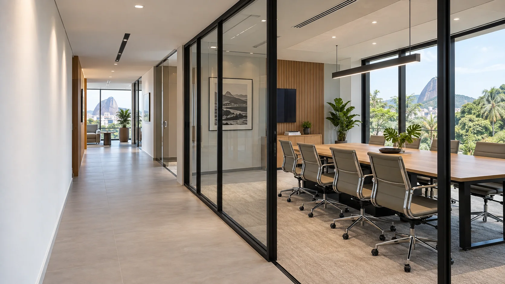
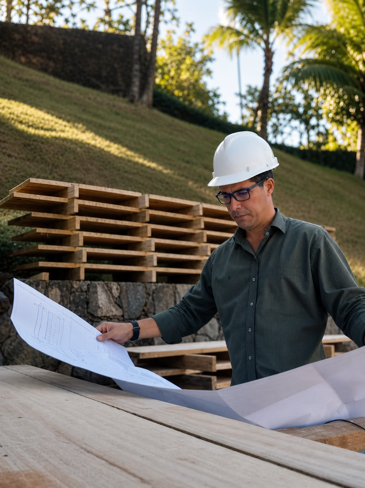

Reforço estrutural
Otávio Kelly
Tijuca, Rio de Janeiro · 2021

ENGENHARIA CIVIL · RIO DE JANEIRO
Projetos, construções, reformas e gerenciamento de obras em todo o Rio de Janeiro.
Os 25 anos se referem à experiência profissional de Sandro Ferreira, engenheiro civil. A Ferreira Projetos e Construções foi fundada por ele em 2019.
O QUE FAZEMOS
Quer reformar sem perder o controle da obra?
Construção, ampliação e reforma com acompanhamento técnico em cada etapa.
Indicado para casas, comércios e escritórios.
Conhecer 02Precisa transformar uma ideia em um projeto executável?
Projetos estruturais, arquitetura, legalização e reforço estrutural para orientar a execução.
Indicado para quem vai construir, ampliar ou regularizar.
Conhecer 03Quer acompanhamento técnico de prazo, custo e execução?
Planejamento, cronograma físico-financeiro, coordenação de fornecedores e registros da obra.
Indicado para obras com várias etapas ou fornecedores.
Conhecer 04Seu espaço precisa de infraestrutura adequada para funcionar?
Instalações elétricas, hidrossanitárias e de rede, salas de TI e CPD, acessibilidade e prevenção contra incêndio.
Indicado para empresas, salas técnicas e espaços comerciais.
ConhecerOBRAS REALIZADAS
Reforço estrutural
Tijuca, Rio de Janeiro · 2021

Reforço estrutural
Pechincha, Rio de Janeiro · 2020

Reforço estrutural
Duque de Caxias, RJ · 2021
 Imagem ilustrativa
Imagem ilustrativa
Reforma corporativa
Centro, Rio de Janeiro
 Imagem ilustrativa
Imagem ilustrativa
Coordenação e gerenciamento
Glória, Rio de Janeiro
 Imagem ilustrativa
Imagem ilustrativa
Ampliação de laboratório
Ilha do Fundão, Rio de Janeiro
 Imagem ilustrativa
Imagem ilustrativa
Acessibilidade e circulação
São Cristóvão, Rio de Janeiro
COMO FUNCIONA
Você sabe o que acontece em cada etapa e fala com o responsável técnico desde o início.
Você conta o que precisa.
Entendemos o local e o escopo.
Serviços, prazo e orçamento definidos.
Acompanhamento técnico até a entrega.
EXPERIÊNCIA NA PRÁTICA
Trabalhos realizados diretamente
ou em parceria com empresas
de engenharia.


DEPOIMENTOS
Avaliação real, publicada no Google.
A Ferreira Projetos e Construções foi impecável na minha obra. Prazo, limpeza, execução e inclusive a educação dos funcionários.
O Sandro é um excelente profissional.
Recomendo de olhos fechados.
Novos depoimentos serão publicados com autorização dos clientes.

RESPONSÁVEL TÉCNICO
Sandro Ferreira é engenheiro civil, tem mais de 25 anos de experiência e é o responsável técnico da Ferreira. Ele acompanha as decisões do projeto à execução: você conversa com quem conhece a sua obra.
SEU PRÓXIMO PROJETO
Conte o que você tem em mente.
A conversa começa aqui.